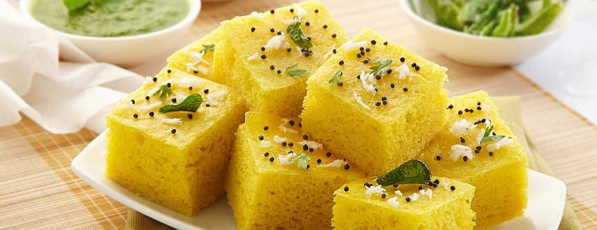

Gujarati Khaman

Description
Khaman is one of the most popular dishes of Gujarat which are spongy and are often consumed as a breakfast by Gujarati's. They are yellow in color and very soft and spongy as they are prepared with batter
Ingredients
- 1 cup Gram Flour
- 2 tablespoons Oil
- 1/2 teaspoon Mustard Seeds
- 1 tablespoon Sugar
- 2 tablespoons chopped Coriander Leaves
- 2 tablespoons grated Fresh Coconut
Steps
- Take all ingredients to prepare batter. Pour approx. 2-3 cups water in steamer at bottom and heat it over medium flame. Make sure that steamer is at least 4-5 minutes heated before placing the plates (filled with batter) in it. Grease 2 small plates or thalis (4-5 inch diameter) using 1-teaspoon oil.
- Take 1 cup gram flour, 1 tablespoon semolina(sooji/rava), 1½ teaspoons lemon juice, 1 teaspoons green chilli-ginger paste, 1/4 cup curd, 3/4 cup water and salt in a bowl. Mix them properly into smooth batter. Make sure that there are no lumps.
- Add 1 teaspoon fruit salt in batter and stir in one direction for approx. 1 minute. You will notice its size would increase to almost double.
- Now, pour batter immediately into each greased plate and fill it upto 1/2-inch thickness.
- Place plates in steamer and steam for 10-12 minutes over medium flame.
- After 10- 12 minues check if it;s ready and then cut into peaces and enjoy